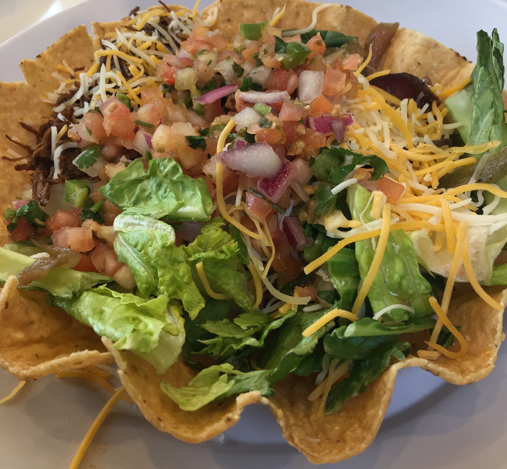

ホストマザーの手作り料理
これはある日の夜ご飯の写真。ホストファミリーと食卓を囲みながら食べる夜ご飯は最高でした！ 私が行った先では、ハンバーガーとメキシコ料理が出てくることが多くてとても美味しかったです。
Homestay in Seattle
これはある日の夜ご飯の写真。ホストファミリーと食卓を囲みながら食べる夜ご飯は最高でした！ 私が行った先では、ハンバーガーとメキシコ料理が出てくることが多くてとても美味しかったです。
これもほんと美味しかったです(笑)。周りのチップスごと全部食べられるのですが、上手に食べないと土砂崩れが起きてお皿に散らかってしまいます。野菜もたくさん取れてヘルシー感を味わえる貴重なメニューです。
カニ！えび！ムール貝！ジャガイモ！その他モロモロが卓上にてんこ盛りに！！木槌で殻を割って食べていきます。これを体験できるのは『Crab Pot』というお店です。海を眺めながら食べられるという贅沢ポイント付きです。